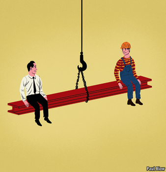

2020-12-25T15:04:45+00:00
Bartleby
巴托比
巴托比
Fair play
再论费厄泼赖
再論費厄潑賴
A new book argues that decency pays off in business as well as in life
一本新书认为，得体不仅在生活中有好报，在工作中也一样
一本新書認為，得體不僅在生活中有好報，在工作中也一樣
NICE GUYS finish last. That pithy motto was coined by Leo Durocher, a baseball manager noted for exulting at injuring his opponents and for cheating his players at cards. In 1969 his Chicago Cubs had a big lead in the closing weeks of the season, but he so alienated his squad (and the umpires) that the team failed to make it to the World Series. In his case, nasty guys finished behind.
好人垫底。这句简练的格言来自利奥·迪罗谢（Leo Durocher），这位棒球队经理以伤害对手和在牌局上对自己的球员出千为乐，由此出名。1969年，他带领的芝加哥小熊队在赛季最后几周遥遥领先，但他和球队（还有裁判）的关系弄得太僵，导致球队最终还是没能进入世界大赛（World Series）。在他自己这个案例上，坏蛋掉到后头去了。
好人墊底。這句簡練的格言來自利奧·迪羅謝（Leo Durocher），這位棒球隊經理以傷害對手和在牌局上對自己的球員出千為樂，由此出名。1969年，他帶領的芝加哥小熊隊在賽季最後幾周遙遙領先，但他和球隊（還有裁判）的關係弄得太僵，導致球隊最終還是沒能進入世界大賽（World Series）。在他自己這個案例上，壞蛋掉到後頭去了。
This is one of the tales told by David Bodanis, a writer best known for his science books, who has turned his attention to the issue of how leaders should exercise their authority. The core message in his book, “The Art of Fairness”, can be found in the subtitle: “The power of decency in a world turned mean”.
这是大卫·伯登尼斯（David Bodanis）笔下的故事之一。这位作者最出名的是科学著作，现在又将注意力转向了领导者应该如何行使他们的权威。他在《公正的艺术》（The Art of Fairness）的副标题里直陈这本书的核心思想：“在一个日益不友善的世界里保持体面的力量。”
這是大衛·伯登尼斯（David Bodanis）筆下的故事之一。這位作者最出名的是科學著作，現在又將注意力轉向了領導者應該如何行使他們的權威。他在《公正的藝術》（The Art of Fairness）的副標題里直陳這本書的核心思想：“在一個日益不友善的世界裡保持體面的力量。”
The Empire State Building was constructed in just 13 months, and that included the dismantling of the Waldorf-Astoria hotel that sat on the site. Paul Starrett, the builder, treated his workers rather well by the standards of the time, paying much attention to safety and paying employees on days when it was too windy to work. Daily wages were more than double the usual rate and hot meals were provided on site.
帝国大厦仅13个月即告完工，这还包括了先拆除华尔道夫酒店。按照当时的标准，施工承包商保罗·斯塔雷特（Paul Starrett）给工人的待遇相当不错。他非常重视安全，在刮大风不能开工的日子也照常给工人发工资。他开出的日薪是一般水平的两倍多，还在工地上供应热腾腾的饭食。
帝國大廈僅13個月即告完工，這還包括了先拆除華爾道夫酒店。按照當時的標準，施工承包商保羅·斯塔雷特（Paul Starrett）給工人的待遇相當不錯。他非常重視安全，在刮大風不能開工的日子也照常給工人發工資。他開出的日薪是一般水平的兩倍多，還在工地上供應熱騰騰的飯食。
The concept is known as “efficiency wages”. Companies that compensate workers well and treat them fairly can attract better, more motivated staff. Unlike most construction projects, the Empire State Building had low staff turnover, and workers suggested productivity improvements such as building a miniature railway line to bring bricks to the site. But Starrett was not naively generous; he hired accountants to patrol the works, checking that all materials were accounted for, and staff attendance was recorded four times a day.
这里头的理念叫做“效率工资”。薪酬良好并公正合理地对待工人的公司能够吸引更好、更有积极性的员工。与大多数建筑工程项目不同，帝国大厦项目的员工流动率很低，而工人也踊跃提出提高生产率的建议，例如修建一条向工地运送砖头的微型铁路。但斯塔雷特也不是天真幼稚的慷慨：他雇用会计来巡视工地，核查所有材料是否入账，并每日四次记录员工出勤。
這裡頭的理念叫做“效率工資”。薪酬良好並公正合理地對待工人的公司能夠吸引更好、更有積極性的員工。與大多數建築工程項目不同，帝國大廈項目的員工流動率很低，而工人也踴躍提出提高生產率的建議，例如修建一條向工地運送磚頭的微型鐵路。但斯塔雷特也不是天真幼稚的慷慨：他僱用會計來巡視工地，核查所有材料是否入賬，並每日四次記錄員工出勤。
The author contrasts Starrett’s story with the tale of Eastern Air Travel, an airline built by Eddie Rickenbacker, a pioneer aviator who had granted mechanics a 40-hour week, profit-related pay and a pension. But when Frank Lorenzo took over the company in the 1980s, he cut wages, alienated the staff and pursued a policy of asset-stripping the company. The workers went on strike in protest and Eastern went bankrupt.
作者将斯塔雷特的故事与埃迪·里肯巴克（Eddie Rickenbacker）创建的美国东方航空（Eastern Air Travel）的历程做对比。在这位飞行员先驱的管理下，机修工每周工作40小时，薪酬与利润挂钩，享受养老金。但当弗兰克·洛伦佐（Frank Lorenzo）在上世纪80年代接管公司后便开始削减工资、疏远员工，并且大肆倒卖公司资产。工人罢工抗议，公司终告破产。
作者將斯塔雷特的故事與埃迪·里肯巴克（Eddie Rickenbacker）創建的美國東方航空（Eastern Air Travel）的歷程做對比。在這位飛行員先驅的管理下，機修工每周工作40小時，薪酬與利潤掛鉤，享受養老金。但當弗蘭克·洛倫佐（Frank Lorenzo）在上世紀80年代接管公司後便開始削減工資、疏遠員工，並且大肆倒賣公司資產。工人罷工抗議，公司終告破產。
Another contrast cited by the author is that between Steve Ballmer, the hard-charging chief executive of Microsoft notorious for his towering rages, and his more emollient successor, Satya Nadella. Mr Ballmer so disliked Apple that he seized an iPhone from a subordinate in full view of the humiliated employee and pretended to stomp on it. On his watch Microsoft missed out on several promising business opportunities. On the day Mr Ballmer announced his departure the share price jumped by 7.5%. Under Mr Nadella, Microsoft has successfully shifted its attention to cloud-based services and even briefly regained the title of the world’s most valuable listed company.
作者还比较了微软前CEO史蒂夫·鲍尔默（Steve Ballmer）与其继任者萨提亚·纳德拉（Satya Nadella），前者咄咄逼人，以雷霆之怒闻名，后者为人更温和。鲍尔默非常讨厌苹果公司，有一次当众从下属手中夺过iPhone，在这位难堪的员工面前作势要踩上几脚。在他任内微软多次错失良机。鲍尔默宣布离任的当天，公司股价上涨了7.5%。在纳德拉的领导下，微软成功地将重心转移到云服务，甚至一度夺回了全球最高市值上市公司的头衔。
作者還比較了微軟前CEO史蒂夫·鮑爾默（Steve Ballmer）與其繼任者薩提亞·納德拉（Satya Nadella），前者咄咄逼人，以雷霆之怒聞名，後者為人更溫和。鮑爾默非常討厭蘋果公司，有一次當眾從下屬手中奪過iPhone，在這位難堪的員工面前作勢要踩上幾腳。在他任內微軟多次錯失良機。鮑爾默宣布離任的當天，公司股價上漲了7.5%。在納德拉的領導下，微軟成功地將重心轉移到雲服務，甚至一度奪回了全球最高市值上市公司的頭銜。
Public projects also require management skills. When Danny Boyle, a film director, was asked to organise the opening ceremony of the 2012 London Olympics, he faced the tough task of keeping the details secret when the project required thousands of volunteers. The conventional approach would have been to make the volunteers sign a non-disclosure agreement. Instead, he asked them to keep the surprise—and trusted them to do so. They did, thanks to the grown-up way he treated them. He listened to their ideas for improving parts of the ceremony and ensured (by threatening to resign) that the volunteers did not have to pay for their costumes.
公共项目同样需要管理技巧。电影导演丹尼·博伊尔（Danny Boyle）受邀执导2012年伦敦奥运会开幕式，他面临一个大难题：在有成千上万名志愿者参与的情况下保密开幕式的细节。传统的做法是让志愿者签署保密协议。而他却恳请他们将惊喜留到最后，并信任他们一定能够做到。他们确实做到了，因为他以公正、尊重的成熟方式对待他们。他听取他们对开幕式某些内容的改进想法，并（不惜以辞职相威胁）确保志愿者不必自己负担演出服装费用。
公共項目同樣需要管理技巧。電影導演丹尼·博伊爾（Danny Boyle）受邀執導2012年倫敦奧運會開幕式，他面臨一個大難題：在有成千上萬名志願者參與的情況下保密開幕式的細節。傳統的做法是讓志願者簽署保密協議。而他卻懇請他們將驚喜留到最後，並信任他們一定能夠做到。他們確實做到了，因為他以公正、尊重的成熟方式對待他們。他聽取他們對開幕式某些內容的改進想法，並（不惜以辭職相威脅）確保志願者不必自己負擔演出服裝費用。
Mr Boyle demonstrated one of the most important traits of good leadership, the author argues, which is a willingness to listen. This relates to a concept known as the “power distance”. If a relationship has a high power-distance score, it is assumed that junior staff should not question their superiors’ decisions; a lower score means that senior staff are willing to listen.
作者认为，博伊尔展现了优秀领导力最重要的特质之一，那就是愿意倾听。这涉及一个称为“权力距离”的概念。如果工作关系当中的权力距离分值较高，那么大家都认为下级员工不应质疑上级的决策；分值较低则意味着高层人员更愿意倾听。
作者認為，博伊爾展現了優秀領導力最重要的特質之一，那就是願意傾聽。這涉及一個稱為“權力距離”的概念。如果工作關係當中的權力距離分值較高，那麼大家都認為下級員工不應質疑上級的決策；分值較低則意味着高層人員更願意傾聽。
Perceptions may differ sharply over whether listening takes place. A study by Johns Hopkins University found that 64% of the medical specialists interviewed felt that their operations had high levels of teamwork, whereas only 28% of their nurses agreed.
至于倾听是否真实发生，不同的人感受可能大相径庭。约翰·霍普金斯大学的一项研究发现，受访的专科医生当中有64%认为自己的工作中团队合作水平很高，但他们的护士只有28%认同这一点。
至於傾聽是否真實發生，不同的人感受可能大相徑庭。約翰·霍普金斯大學的一項研究發現，受訪的專科醫生當中有64%認為自己的工作中團隊合作水平很高，但他們的護士只有28%認同這一點。
Individuals can become fixated on a particular approach to resolving a problem and ignore any advice that suggests a different tack, especially if it comes from a junior colleague. “When your underlings aren’t terrified of you, and you’re modest enough to know you’re fallible, you can set up the channels that will help you avoid fixation,” Mr Bodanis writes. It is a wise lesson. Ruling by fear may work for a while, but it is doomed to fail in the long run. Remember Durocher.
人们可能会偏执于某一种解决问题的方法，而不理会任何采取不同策略的建议，尤其是来自低年资同事的建议。伯登尼斯写道：“如果你的下属不惧怕你，而你又足够谦虚，知道自己可能犯错，你就可以建立渠道来帮助自己避免执迷不悟。”这是一条明智的经验。用恐惧来统治可能有一时之效，但长期必定会失败。别忘了迪罗谢的前车之鉴。
人們可能會偏執於某一種解決問題的方法，而不理會任何採取不同策略的建議，尤其是來自低年資同事的建議。伯登尼斯寫道：“如果你的下屬不懼怕你，而你又足夠謙虛，知道自己可能犯錯，你就可以建立渠道來幫助自己避免執迷不悟。”這是一條明智的經驗。用恐懼來統治可能有一時之效，但長期必定會失敗。別忘了迪羅謝的前車之鑒。